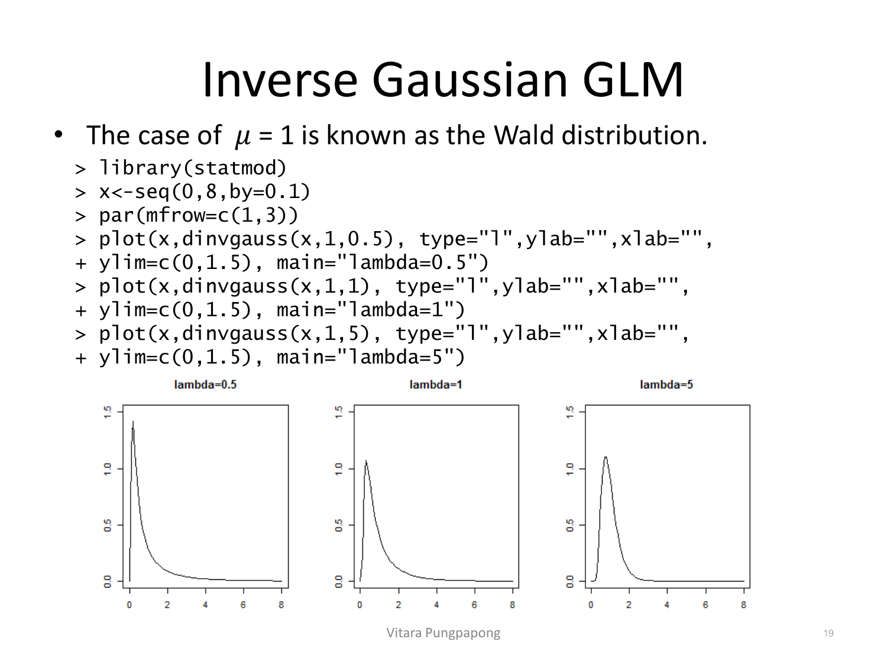
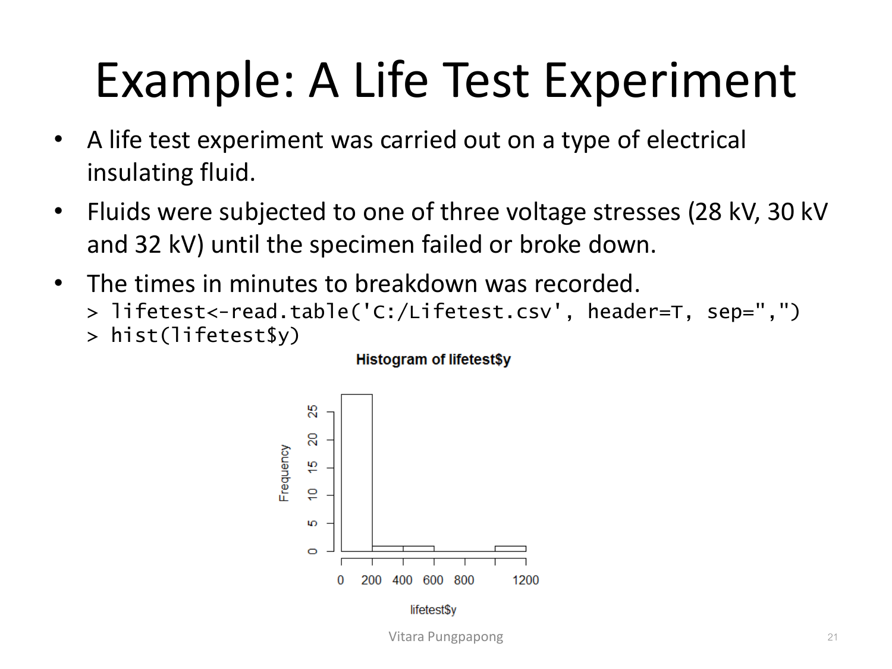
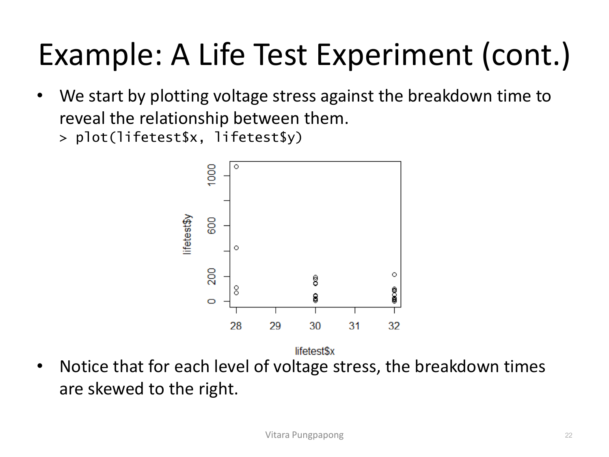
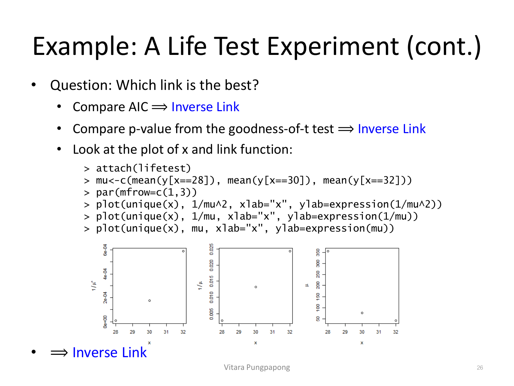

→ ฝึกกับโจทย์จริง: Corn Yield vs Nitrogen — Gamma/Inverse-Gaussian (Assignment 9#2)
Lecture 13 — Other GLMs
Lecture 8 วางกรอบ GLM ทั่วไปไว้แล้ว (exponential family, link function, canonical link, deviance) และ Binomial/Poisson เป็น GLM ที่ใช้บ่อยที่สุดสำหรับข้อมูลนับ/สัดส่วน บทนี้ขยายไปยัง 2 family ที่ใช้น้อยกว่าแต่สำคัญมากสำหรับข้อมูลต่อเนื่อง เป็นบวกเสมอ และเบ้ขวา (เช่น เวลาถึงจุดเสียหาย, ค่าใช้จ่ายเคลมประกัน, ความต้านทานไฟฟ้า) — Gamma GLM และ Inverse Gaussian GLM. ตามลำดับความสำคัญของวิชานี้ บทเรียนนี้เน้น 3 อย่าง: เขียนสมการโมเดลของแต่ละ family ให้ถูก (พร้อม link function ที่เหมาะสม), เช็คได้ว่าโมเดลไหน/link ไหนดีกว่ากัน จาก deviance และ AIC ใน R output จริง, และแปลผลสัมประสิทธิ์ ด้วย \(\exp(\hat\beta)\) เมื่อใช้ log link — เหมือนหลักการเดียวกับ Poisson regression ที่เคยเรียนมา
สไลด์เปิดเรื่องตรง ๆ: Binomial, Gaussian, และ Poisson เป็น GLM ที่ใช้บ่อยที่สุด ส่วน gamma และ inverse Gaussian เป็น GLM ที่ใช้น้อยกว่า และถูกออกแบบมาสำหรับข้อมูลต่อเนื่องที่เบ้ (skewed) โดยเฉพาะ — นี่คือจุดต่างสำคัญจาก normal linear regression ที่สมมติ error แจกแจงแบบสมมาตร (normal) รอบเส้นถดถอย
Normal linear regression เขียนเป็น \(Y = X\beta + \varepsilon\), \(\varepsilon \sim N(0, \sigma^2 I)\) ซึ่งสมมติ \(\text{Var}(Y_i) = \sigma^2\) คงที่ทุกจุด (variance function \(\text{Var}(\mu_i) = \phi\)) สไลด์ตั้งคำถาม: ถ้าสมมตินี้ผิด และ variance กลับเป็นรูปกำลังสองของค่าเฉลี่ย คือ \(\text{Var}(Y_i) = \sigma^2\mu_i^2\) (variance function \(\text{Var}(\mu_i) = \phi\mu_i^2\)) จะแก้ปัญหานี้อย่างไร?
คำตอบที่สไลด์เสนอ: แปลง log ตัวแปรตอบสนอง (log-normal model) พิสูจน์ด้วย Taylor expansion อันดับ 1 ของ \(Z_i = \log(Y_i)\) รอบ \(\mu_i\):
อ่านผลลัพธ์นี้ให้ทะลุ — เทียบก่อน/หลัง แปลง log:
สไลด์ระบุทางเลือกที่สองด้วย: ถ้าอยากทำงานบนสเกลเดิมของ Y (ไม่อยาก log ก่อน แล้วต้อง back-transform ทีหลัง) gamma regression คือทางแก้อีกทาง — เพราะ gamma distribution มี variance function เป็นรูปกำลังสองของ \(\mu\) โดยธรรมชาติอยู่แล้ว (จะเห็นในหัวข้อถัดไป) จึงจับ pattern \(\text{Var}(Y_i) \propto \mu_i^2\) ได้ตรง ๆ โดยไม่ต้องแปลงตัวแปรก่อน
Gamma density เขียนทั่วไปเป็น \(f(y) = \dfrac{1}{\Gamma(\nu)} \lambda^\nu y^{\nu-1} e^{-\lambda y}\), \(y > 0\) โดย \(\nu\) คือ shape parameter และ \(\lambda\) คือ scale parameter สไลด์ reparameterize โดยแทน \(\lambda = \dfrac{\nu}{\mu}\) เพื่อให้อยู่ในรูป GLM:
อ่านความหมาย: \(\text{Var}(Y_i) = \dfrac{\mu_i^2}{\nu}\) คือรูป \(\text{Var}(Y_i) \propto \mu_i^2\) ที่หัวข้อ 2 พูดถึงพอดี — \(\nu\) ทำหน้าที่เหมือน "ตัวหารความแปรปรวน" ตัวเดียวกันทุกจุดข้อมูล (จึงเป็น dispersion parameter \(\phi=\nu^{-1}\) ไม่ขึ้นกับ X) ในขณะที่ตัวแปรผันตามค่าเฉลี่ยจริง ๆ คือ \(\mu^2\)
Canonical parameter \(\theta=-1/\mu\) บอกว่า canonical link คือ \(\eta=-1/\mu\) แต่ในทางปฏิบัติมักตัดเครื่องหมายลบทิ้งแล้วใช้ \(\eta=1/\mu\) (inverse link) แทน
สไลด์ให้เหตุผลการเลือก link แต่ละแบบไว้ชัดเจน ไม่ใช่แค่รายชื่อสูตร:
| Link | สูตร | เมื่อไรควรใช้ (ตามที่สไลด์ระบุ) |
|---|---|---|
| Canonical (inverse) | \(\eta = \dfrac{1}{\mu}\) | ไม่การันตีว่า \(\mu > 0\) (อาจมีปัญหา) — เหมาะเมื่อรู้อยู่แล้วว่า mean response มีขอบเขต (bounded) |
| Log | \(\eta = \log(\mu)\) | ควรใช้เมื่อสงสัยว่าผลของตัวแปรอิสระเป็นแบบ คูณ (multiplicative) กับค่าเฉลี่ย — เมื่อ variance เล็ก จะให้ผลใกล้เคียงกับ Gaussian model ที่ log ตัวแปรตอบสนองแล้ว |
| Linear | \(\eta = \mu\) | เหมาะกับการโมเดล sum of squares หรือ variance component ที่เป็น \(\chi^2\) (กรณีพิเศษของ gamma ที่ \(\lambda=1/2,\ \nu=df/2\)) |
ในทางปฏิบัติ log link เป็นตัวที่ใช้บ่อยที่สุด เพราะทำให้แปลผลสัมประสิทธิ์ได้ง่ายแบบเดียวกับ Poisson regression: \(\log(\mu_i) = X_i\beta \implies \mu_i = \exp(\beta_0)\cdot\exp(\beta_1 x_{1i})\cdots\exp(\beta_p x_{pi})\) — ผลของแต่ละ X เป็นตัวคูณเข้ากับค่าเฉลี่ย ไม่ใช่บวก จึงต้องแปลผลด้วย \(\exp(\hat\beta)\) เสมอ ไม่ใช่ \(\hat\beta\) ตรง ๆ
ข้อมูลจาก Myers & Montgomery (1997): 4 ปัจจัย (x1–x4, แต่ละตัวมี 2 ระดับ − /+) ที่คาดว่าส่งผลต่อ resistivity ของ wafer จาก full factorial experiment สังเกตค่าสรุปของ resist:
> data(wafer)
> summary(wafer)
x1 x2 x3 x4 resist
-:8 -:8 -:8 -:8 Min. :165.7
+:8 +:8 +:8 +:8 1st Qu.:201.0
Median :214.2
Mean :229.3
3rd Qu.:259.3
Max. :339.9ก่อนลอง gamma GLM สไลด์ fit normal linear regression บนสเกล log(resist) ก่อน (Box-Cox แนะนำ log transform) แล้วเลือกโมเดลด้วย AIC (step()):
> lmodel<-lm(log(resist)~.^2, data=wafer)
> reducelmodel<-step(lmodel)
> summary(reducelmodel)
Call:
lm(formula = log(resist) ~ x1 + x2 + x3 + x4 + x1:x3 + x2:x3 + x3:x4, data = wafer)
Coefficients:
Estimate Std. Error t value Pr(>|t|)
(Intercept) 5.31111 0.04762 111.525 4.67e-14 ***
x1+ 0.20088 0.04762 4.218 0.00292 **
x2+ -0.21073 0.04762 -4.425 0.00221 **
x3+ 0.43718 0.06735 6.491 0.00019 ***
x4+ 0.03537 0.04762 0.743 0.47892
x1+:x3+ -0.15621 0.06735 -2.319 0.04896 *
x2+:x3+ -0.17824 0.06735 -2.647 0.02941 *
x3+:x4+ -0.18303 0.06735 -2.718 0.02635 *
---
Residual standard error: 0.06735 on 8 degrees of freedom
Multiple R-squared: 0.9471, Adjusted R-squared: 0.9008
F-statistic: 20.46 on 7 and 8 DF, p-value: 0.000165จากนั้นสไลด์ fit gamma GLM ด้วย log link บน resist โดยตรง (ไม่ log ก่อน) เพื่อเปรียบเทียบ:
> gmodel<-glm(resist~.^2, data=wafer, family=Gamma(link=log))
> reducegmodel<-step(gmodel)
> summary(reducegmodel)
Call:
glm(formula = resist ~ x1 + x2 + x3 + x4 + x1:x3 + x2:x3 + x3:x4,
family = Gamma(link = log), data = wafer)
Coefficients:
Estimate Std. Error t value Pr(>|t|)
(Intercept) 5.31195 0.04757 111.677 4.62e-14 ***
x1+ 0.20029 0.04757 4.211 0.00295 **
x2+ -0.21101 0.04757 -4.436 0.00218 **
x3+ 0.43674 0.06727 6.493 0.00019 ***
x4+ 0.03537 0.04757 0.744 0.47836
x1+:x3+ -0.15549 0.06727 -2.312 0.04957 *
x2+:x3+ -0.17626 0.06727 -2.620 0.03064 *
x3+:x4+ -0.18195 0.06727 -2.705 0.02687 *
---
(Dispersion parameter for Gamma family taken to be 0.004524942)
Null deviance: 0.697837 on 15 degrees of freedom
Residual deviance: 0.036266 on 8 degrees of freedom
AIC: 139.2
Number of Fisher Scoring iterations: 4เทียบตัวเลขจริงระหว่างสองโมเดล:
x1+ ได้ 0.20088 ใน log-normal model กับ 0.20029 ใน gamma GLM — ต่างกันแค่ในทศนิยมตำแหน่งที่ 3 แทบไม่มีนัยสำคัญในทางปฏิบัติข้อมูล Hallin & Ingenbleek (1983): ค่าสินไหมประกันรถยนต์ในสวีเดนปี 1977 แบ่งตามระยะทางที่ขับ (Kilometres), ระดับ bonus จากการไม่เคลม (Bonus), และประเภทรถ (Make) เนื่องจากยอดรวมค่าสินไหมของแต่ละกลุ่มควรเป็นสัดส่วนกับจำนวนกรมธรรม์ (Insured, policy-years) ในกลุ่มนั้น สไลด์จึงใส่ offset(log(Insured)) เข้าไปในโมเดล — หลักการเดียวกับที่ Poisson regression ใช้ offset เพื่อโมเดลอัตรา (rate) แทนยอดรวมดิบ ๆ:
> data(motorins)
> motor1<-motorins[motorins$Zone==1,]
> gmodel<-glm(Payment~offset(log(Insured))+as.numeric(Kilometres)+Make+Bonus,
+ data=motor1, family=Gamma(link=log))
> summary(gmodel)
Coefficients:
Estimate Std. Error t value Pr(>|t|)
(Intercept) 6.52731 0.17774 36.723 < 2e-16 ***
as.numeric(Kilometres) 0.12007 0.03115 3.855 0.000143 ***
Make2 0.40704 0.17824 2.284 0.023128 *
Make3 0.15535 0.17955 0.865 0.387666
Make4 -0.34394 0.19150 -1.796 0.073546 .
Make5 0.14467 0.18097 0.799 0.424726
Make6 -0.34557 0.17824 -1.939 0.053515 .
Make7 0.06136 0.18244 0.336 0.736893
Make8 0.75038 0.18726 4.007 7.85e-05 ***
Make9 0.03197 0.17824 0.179 0.857783
Bonus -0.20069 0.02150 -9.334 < 2e-16 ***
---
(Dispersion parameter for Gamma family taken to be 0.5559565)
Null deviance: 238.97 on 294 degrees of freedom
Residual deviance: 155.06 on 284 degrees of freedom
AIC: 7167.5เพราะ offset(log(Insured)) รวมกับ log link ทำให้ \(\log(\mu_i) = \log(\text{Insured}_i) + X_i\beta \implies \dfrac{\mu_i}{\text{Insured}_i} = \exp(X_i\beta)\) — โมเดลนี้จึงทำนายค่าสินไหมเฉลี่ยต่อกรมธรรม์หนึ่งหน่วย ไม่ใช่ยอดรวมดิบ ซึ่งสมเหตุสมผลกว่ามากเมื่อแต่ละกลุ่มมีขนาดต่างกัน
เพราะ log link ทำให้ผลของ X เป็นตัวคูณ (multiplicative) จึงต้องยกกำลัง exp() ก่อนแปลผล เสมอ ไม่ใช่อ่าน \(\hat\beta\) ตรง ๆ แบบ linear regression:
as.numeric(Kilometres): \(\hat\beta = 0.12007 \implies \exp(0.12007) = 1.1276\) — "เมื่อระดับระยะทางขับเพิ่มขึ้น 1 หน่วย ค่าสินไหมเฉลี่ยคาดว่าจะเพิ่มขึ้นโดยประมาณ 12.76% เมื่อควบคุมตัวแปรอื่น"สังเกตรูปแบบที่ใช้ซ้ำได้เสมอ: \(\hat\beta > 0 \implies \exp(\hat\beta) > 1 \implies\) ค่าเฉลี่ยเพิ่มขึ้น, \(\hat\beta < 0 \implies \exp(\hat\beta) < 1 \implies\) ค่าเฉลี่ยลดลง — เปอร์เซ็นต์การเปลี่ยนแปลงคือ \((\exp(\hat\beta) - 1) \times 100\%\)
Make4 มี \(\hat\beta = -0.34394\) จงเขียนประโยคแปลผลที่ถูกต้อง (พร้อมตัวเลขเปอร์เซ็นต์)ต่อมาสไลด์ fit log-normal model (gaussian family บน log(Payment)) เพื่อเทียบ:
> lnmodel<-glm(log(Payment)~offset(log(Insured))+as.numeric(Kilometres)+Make+Bonus,
+ data=motor1,family=gaussian)
> summary(lnmodel)
Coefficients:
Estimate Std. Error t value Pr(>|t|)
(Intercept) 6.514035 0.186339 34.958 < 2e-16 ***
as.numeric(Kilometres) 0.057132 0.032654 1.750 0.08126 .
...
Bonus -0.178061 0.022540 -7.900 6.17e-14 ***
(Dispersion parameter for gaussian family taken to be 0.611019)
Null deviance: 238.56 on 294 degrees of freedom
Residual deviance: 173.53 on 284 degrees of freedom
AIC: 704.64ครั้งนี้ต่างจากตัวอย่าง wafer อย่างชัดเจน:
Kilometres มีนัยสำคัญในโมเดล gamma (p=0.000143) แต่ไม่มีนัยสำคัญในโมเดล log-normal (p=0.08126 > 0.05)Bonus: −0.20069 vs −0.178061)นี่คือกรณีที่การเลือก distribution/link มีผลจริงต่อข้อสรุปทางสถิติ ไม่ใช่แค่รายละเอียดปลีกย่อย คำถามที่ตามมา: โมเดลไหนดีกว่ากัน?
Inverse Gaussian เป็นอีก family สำหรับข้อมูลต่อเนื่องบวกเบ้ขวา แต่มี variance function ที่ "แรง" กว่า gamma:
Canonical link คือ \(\eta=1/\mu^2\) ส่วน link ทางเลือกอื่นที่ใช้ได้คือ inverse (\(\eta=1/\mu\)), identity (\(\eta=\mu\)), และ log (\(\eta=\log \mu\)) — สังเกตความต่างจาก gamma: variance function ของ inverse Gaussian คือ \(\mu^3\) ในขณะที่ gamma คือ \(\mu^2\) — เลขชี้กำลังสูงกว่าหมายความว่า variance ของ inverse Gaussian โตเร็วกว่าตามค่าเฉลี่ย
กรณีพิเศษ \(\mu=1\) เรียกว่า Wald distribution ภาพต่อไปนี้แสดงรูปทรงของ density เมื่อ \(\lambda\) เปลี่ยนค่า:

อ่านตัวเลขในภาพ: ทั้งสามกราฟใช้ \(\mu=1\) เหมือนกัน แต่ปรับ \(\lambda\) จาก 0.5 → 1 → 5:
ทั้งสอง family มีจุดร่วมคือ response เป็นบวกและเบ้ขวา แต่ variance function ต่างกันที่เลขชี้กำลังของ \(\mu\):
| Family | Var(Y) | ความหมาย |
|---|---|---|
| Gamma GLM | \(\propto \mu^2\) | variance โตตามค่าเฉลี่ยแบบกำลังสอง |
| Inverse Gaussian GLM | \(\propto \mu^3\) | variance โตเร็วกว่า gamma — เหมาะกับข้อมูลที่มีค่าสุดโต่ง (extreme values) มากกว่าปกติ |
กฎที่สไลด์สรุปไว้ตรง ๆ: ถ้าข้อมูลมีค่าที่สุดโต่งกว่า (heavier right tail) ให้เลือก inverse Gaussian GLM แทน gamma GLM เพราะ variance function ที่โตเร็วกว่า (\(\mu^3\) vs \(\mu^2\)) จับความแปรปรวนที่รุนแรงกว่าได้ดีกว่า
การทดลองอายุการใช้งานของฉนวนไฟฟ้าเหลว ทดสอบที่ความเครียดแรงดัน 3 ระดับ (28, 30, 32 kV) จนกว่าจะเสียหาย บันทึกเวลาที่เสียหาย (นาที) เริ่มจาก histogram ของเวลาเสียหายทั้งหมด:

อ่านภาพ: แท่งความถี่ส่วนใหญ่กระจุกตัวอยู่ในช่วง 0–200 นาที (สูงเกิน 25 จุดข้อมูล) แต่มีอย่างน้อย 1 จุดที่หลุดไปถึงช่วง 1000–1200 นาที — ห่างจากกลุ่มหลักหลายเท่าตัว นี่คือรูปร่างเบ้ขวารุนแรงตามที่คาดไว้ และสัญญาณของ "extreme value" ที่หัวข้อ 7 พูดถึง — เป็นเบาะแสว่า inverse Gaussian อาจเหมาะสมกว่า gamma ในกรณีนี้
ต่อมา plot ความสัมพันธ์ระหว่างระดับแรงดัน (x) กับเวลาเสียหาย (y):

อ่านตัวเลขในภาพ:
สไลด์สรุปว่า "ทุกระดับของแรงดันมีเวลาเสียหายที่เบ้ขวา" ไม่ใช่แค่ภาพรวมทั้งชุดข้อมูลเบ้ — เป็นสัญญาณ่ว่า variance สัมพันธ์กับค่าเฉลี่ยของแต่ละกลุ่มด้วย ไม่ใช่แค่ความหลากหลายระหว่างกลุ่ม
สไลด์ fit inverse Gaussian GLM ด้วย 3 link function แล้วเทียบกัน — เริ่มจาก canonical link (\(\eta=1/\mu^2\)):
> model1<-glm(y~x, data=lifetest, family=inverse.gaussian)
> summary(model1)
Coefficients:
Estimate Std. Error t value Pr(>|t|)
(Intercept) -3.319e-03 1.557e-03 -2.131 0.0417 *
x 1.188e-04 5.553e-05 2.140 0.0409 *
(Dispersion parameter for inverse.gaussian family taken to be 0.0259203)
Null deviance: 10.0028 on 30 degrees of freedom
Residual deviance: 9.7849 on 29 degrees of freedom
AIC: 364.58
> 1-pchisq(9.7849,29)
[1] 0.9996777Inverse link (\(\eta=1/\mu\)):
> model2<-glm(y~x, data=lifetest, family=inverse.gaussian(link=inverse))
> summary(model2)
Coefficients:
Estimate Std. Error t value Pr(>|t|)
(Intercept) -0.146905 0.055851 -2.630 0.0135 *
x 0.005345 0.001906 2.805 0.0089 **
(Dispersion parameter for inverse.gaussian family taken to be 0.02905859)
Null deviance: 10.0028 on 30 degrees of freedom
Residual deviance: 9.7766 on 29 degrees of freedom
AIC: 364.55
> 1-pchisq(9.7766,29)
[1] 0.9996804Identity link (\(\eta=\mu\)):
> model3<-glm(y~x, data=lifetest, family=inverse.gaussian(link=identity))
> summary(model3)
Coefficients:
Estimate Std. Error t value Pr(>|t|)
(Intercept) 1179.26 874.91 1.348 0.188
x -35.59 27.41 -1.298 0.204
(Dispersion parameter for inverse.gaussian family taken to be 0.03239784)
Null deviance: 10.0028 on 30 degrees of freedom
Residual deviance: 9.8043 on 29 degrees of freedom
AIC: 364.64
> 1-pchisq(9.8043,29)
[1] 0.9996712วิธี 1-pchisq(residual deviance, df) นี้คือ goodness-of-fit test ตามกรอบ Lecture 8 — deviance มีการแจกแจงประมาณ \(\chi^2(df)\) ภายใต้ \(H_0\): โมเดลนี้ fit ข้อมูลได้ดี — p-value ที่สูงมาก (~0.9997 ทั้งสามโมเดล) แปลว่าไม่มีหลักฐานปฏิเสธว่าโมเดล fit ไม่ดี ทั้งสามแบบ ดังนั้นต้องใช้เกณฑ์อื่นเลือกว่า link ไหนดีที่สุด
เทียบทั้งสามโมเดล (เพราะเป็น family เดียวกัน ต่างแค่ link — เปรียบเทียบ AIC กันได้ตรง ๆ ต่างจากการเทียบข้าม distribution ในหัวข้อ 5):
| Link | AIC | Residual deviance | 1-pchisq (goodness-of-fit p-value) | x significant? |
|---|---|---|---|---|
| Canonical \(\left(1/\mu^2\right)\) | 364.58 | 9.7849 | 0.99968 | p=0.0409 |
| Inverse \(\left(1/\mu\right)\) | 364.55 (ต่ำสุด) | 9.7766 | 0.99968 | p=0.0089 (แน่นสุด) |
| Identity \(\left(\mu\right)\) | 364.64 | 9.8043 | 0.99967 | p=0.204 (ไม่นัยสำคัญ!) |
ทั้งเกณฑ์ AIC (364.55 ต่ำสุด) และ p-value ของ goodness-of-fit test ชี้ไปทาง inverse link เหมือนกัน — และ identity link ยังมีปัญหาเพิ่มคือสัมประสิทธิ์ของ x ไม่มีนัยสำคัญเลย (p=0.204) ต่างจากอีกสอง link ที่ x มีนัยสำคัญชัดเจน สไลด์ยืนยันด้วยการ plot ค่าเฉลี่ยที่สังเกตได้ (\(\mu\)) ที่แต่ละระดับ x ผ่าน link function ทั้งสามแบบ:

อ่านภาพ: มีแค่ 3 จุด (ที่ x=28, 30, 32) ในแต่ละกราฟเพราะคำนวณจากค่าเฉลี่ยของแต่ละกลุ่ม แต่รูปแบบชัดเจน:
เพราะ GLM ตั้งสมมติฐานว่า \(g(\mu) = X\beta\) เป็นเชิงเส้นใน X, link function ที่ทำให้จุดเรียงเป็นเส้นตรงมากที่สุดคือ link ที่เหมาะกับข้อมูลมากที่สุด สไลด์สรุปตรงกับผลจาก AIC และ p-value ก่อนหน้า: Inverse link คือคำตอบทั้งสามเกณฑ์
1-pchisq(residual deviance, df) — ใกล้เคียงกันมากทั้งสามแบบ (~0.9997) แต่ inverse link ยังให้สัมประสิทธิ์ x ที่มีนัยสำคัญชัดเจนที่สุด (p=0.0089) ในขณะที่ identity link ทำให้ x ไม่มีนัยสำคัญเลย (3) plot ของ \(g(\mu)\) เทียบ x แบบต่าง ๆ — กราฟของ \(1/\mu\) เทียบ x เรียงใกล้เส้นตรงมากที่สุด ตรงกับสมมติฐาน GLM ที่ว่า \(g(\mu)=X\beta\) ต้องเป็นเชิงเส้น ทั้ง 3 เกณฑ์เทียบกันได้ตรง ๆ เพราะทั้งสามโมเดลใช้ distribution เดียวกัน (inverse Gaussian) ต่างกันแค่ link function เท่านั้น ไม่เหมือนหัวข้อ 5 ที่เทียบข้าม distribution (gamma vs gaussian) ซึ่งทำให้ AIC และ LRT เทียบกันตรง ๆ ไม่ได้รวมทุกอย่างจาก 3 ตัวอย่างเป็นตารางเปรียบเทียบกลาง ๆ ที่ใช้ตอบข้อสอบได้ทันที:
| Family | ข้อมูลที่เหมาะสม | Var(Y) | Link ที่นิยม | สมการโมเดล (log link) | การแปลผล \(\hat\beta\) |
|---|---|---|---|---|---|
| Gamma | ต่อเนื่อง เป็นบวกเสมอ เบ้ขวา (เช่น ค่าใช้จ่ายเคลม, resistivity) | \(\propto \mu^2\) | log (multiplicative), canonical/inverse \((\eta=1/\mu)\), linear \((\eta=\mu\), สำหรับ \(\chi^2)\) | \(\log(\mu_i)=X_i\beta\) | \(\exp(\hat\beta)\) = ตัวคูณของค่าเฉลี่ยต่อการเพิ่ม X 1 หน่วย; % เปลี่ยนแปลง = \((\exp(\hat\beta)-1)\times100\%\) |
| Inverse Gaussian | ต่อเนื่อง เป็นบวกเสมอ เบ้ขวารุนแรงกว่า มีค่าสุดโต่งมากกว่า Gamma | \(\propto \mu^3\) | canonical \((\eta=1/\mu^2)\), inverse \((\eta=1/\mu)\), identity \((\eta=\mu)\), log | ขึ้นกับ link ที่เลือก เช่น \(\dfrac{1}{\mu_i}=X_i\beta\) ถ้าใช้ inverse link | ถ้าใช้ log link: แปลผลแบบ \(\exp(\hat\beta)\) เหมือน Gamma; ถ้า link อื่น (identity/inverse) ต้องอ่านทิศทาง (บวก/ลบ) ของผลต่อ \(\eta\) โดยตรง ซึ่งตีความยากกว่า |
วิธีเลือกระหว่างสอง family:
ตอนนี้คุณควรบอกได้ว่าเมื่อ response เป็นข้อมูลต่อเนื่องบวกเบ้ขวา ควรเลือก Gamma GLM (variance \(\propto\mu^2\)) หรือ Inverse Gaussian GLM (variance \(\propto\mu^3\) — เมื่อมี extreme values มากกว่า) และเมื่อเลือกได้แล้ว คุณควรทำสิ่งต่อไปนี้ได้:
1-pchisq(deviance, df))ตารางนี้ไล่ทุกหน้าของ Lecture13.pdf ตั้งแต่หน้า 1 ถึง 26 — หน้าที่มี ✓ ถูกอธิบายและ/หรือใส่รูปในเนื้อหาข้างบนแล้ว ส่วนที่เหลือ (etc) เป็นหน้าปกที่ไม่มีเนื้อหาทฤษฎีใหม่
| หน้า | เนื้อหา | สถานะ |
|---|---|---|
| 1 | ปกเรื่อง "Lecture 13: Other GLMs" | etc — ปก |
| 2 | Other GLMs — ภาพรวม Binomial/Gaussian/Poisson vs Gamma/Inverse Gaussian | ✓ หัวข้อ 1 |
| 3 | Motivation for Gamma GLM — ปัญหา \(\text{Var}(Y_i)=\sigma^2\mu_i^2\) (quadratic variance) | ✓ หัวข้อ 2 |
| 4 | Motivation for Gamma GLM — proof \(E[Z_i]\approx\log(\mu_i)\) ด้วย Taylor expansion | ✓ หัวข้อ 2 |
| 5 | Motivation for Gamma GLM — proof (cont.) \(\text{Var}(Z_i)\approx\sigma^2\) | ✓ หัวข้อ 2 |
| 6 | Motivation for Gamma GLM — ทางเลือก gamma regression บนสเกลเดิม | ✓ หัวข้อ 2 |
| 7 | Gamma GLM — density, reparameterization, canonical parameter/link | ✓ หัวข้อ 3 |
| 8 | Three common choices of link function (canonical/log/linear) | ✓ หัวข้อ 3 |
| 9 | Example: Manufacturing semiconductors — wafer data summary() | ✓ หัวข้อ 4 |
| 10 | Example (cont.) — lm(log(resist)~.^2) + step() + summary() เต็ม | ✓ หัวข้อ 4 |
| 11 | Example (cont.) — gamma glm(family=Gamma(link=log)) + step() + summary() | ✓ หัวข้อ 4 |
| 12 | Example (cont.) — เปรียบเทียบสัมประสิทธิ์/SE ระหว่าง gamma กับ log-normal | ✓ หัวข้อ 4 |
| 13 | Example: Payments on insurance claims — บริบทข้อมูล motorins + offset | ✓ หัวข้อ 5 |
| 14 | Example (cont.) — gamma GLM (log link, offset) summary() เต็ม | ✓ หัวข้อ 5 |
| 15 | Example (cont.) — log-normal (gaussian) model summary() เต็ม | ✓ หัวข้อ 5 |
| 16 | Example (cont.) — เปรียบเทียบโมเดล, เหตุผลว่าทำไม LRT ใช้ไม่ได้, สรุปเลือก gamma | ✓ หัวข้อ 5 |
| 17 | Inverse Gaussian GLM — density, E[Y], Var(Y), canonical parameter/dispersion | ✓ หัวข้อ 6 |
| 18 | Inverse Gaussian GLM — canonical link, link ทางเลือกอื่น, เปรียบเทียบ variance function | ✓ หัวข้อ 6 |
| 19 | Inverse Gaussian GLM — Wald distribution \((\mu=1)\), R code + 3 density plots | ✓ หัวข้อ 6 (มีรูป) |
| 20 | Gamma or Inverse Gaussian GLM — เปรียบเทียบ \(\text{Var}(Y)\propto\mu^2\) vs \(\mu^3\) | ✓ หัวข้อ 7 |
| 21 | Example: A Life Test Experiment — บริบทข้อมูล + histogram(lifetest$y) | ✓ หัวข้อ 8 (มีรูป) |
| 22 | Example (cont.) — plot(x,y) แสดงความเบ้ขวาในแต่ละระดับแรงดัน | ✓ หัวข้อ 8 (มีรูป) |
| 23 | Example (cont.) — inverse Gaussian GLM ด้วย canonical link + goodness-of-fit test | ✓ หัวข้อ 8 |
| 24 | Example (cont.) — inverse Gaussian GLM ด้วย inverse link + goodness-of-fit test | ✓ หัวข้อ 8 |
| 25 | Example (cont.) — inverse Gaussian GLM ด้วย identity link + goodness-of-fit test | ✓ หัวข้อ 8 |
| 26 | Example (cont.) — สรุปเลือก link ที่ดีที่สุด (AIC, p-value, plot \(g(\mu)\) vs x) | ✓ หัวข้อ 8 (มีรูป) |
สงสัยตรงไหน ถามได้เลยในแชท — ผมเป็นผู้สอนของคุณ ถามซ้ำได้ ถามลึกได้ ไม่ต้องเกรงใจ